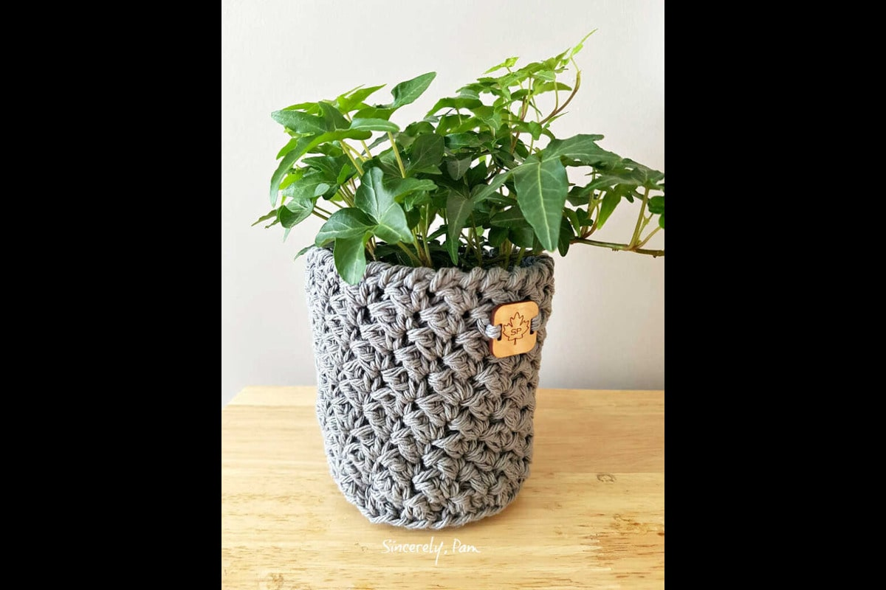

Art n Craft
Let's create something
Art n Craft
Crochet
Flower Bouquet

Brighten your space with our stunning crochet bouquets, beautifully handcrafted from vibrant yarns. These everlasting arrangements make the perfect gift for any occasion or a unique addition to your home decor. Stand out with a timeless piece that reflects creativity and craftsmanship—order yours today!
Baby Shoes
Step into style with our adorable handmade baby shoes, crafted with love and care. Designed for comfort and durability, each pair features unique patterns and colors to keep your little one's feet cozy and fashionable. Perfect for any occasion, these charming shoes make a delightful gift that every parent will adore—shop now!
Key-chain
Elevate your everyday essentials with our handcrafted keychains, each a unique piece of art! Made with intricate designs and vibrant colors, these keychains add a personal touch to your keys or bags. Perfect as gifts or a fun accessory for yourself, they combine functionality with creativity—get yours today!
Hello Everyone!
I'm Afrah, and I specialize in Crochet work. I would like to showcase my skills on this platform, highlighting my experience in delivering artistic crafts, fashion accessories, and home decor to my clients. With a keen eye for detail and a passion for creativity, I strive to create unique pieces that reflect individual styles. Each project I undertake is a blend of traditional techniques and modern design, ensuring that my work stands out. I am excited to connect with others who appreciate the beauty of handcrafted artistry!
My Work
-
Flower Pot
Sed mattis nunc -
 Hat
Hat
Praes tinci sed -
Wall Hanging
